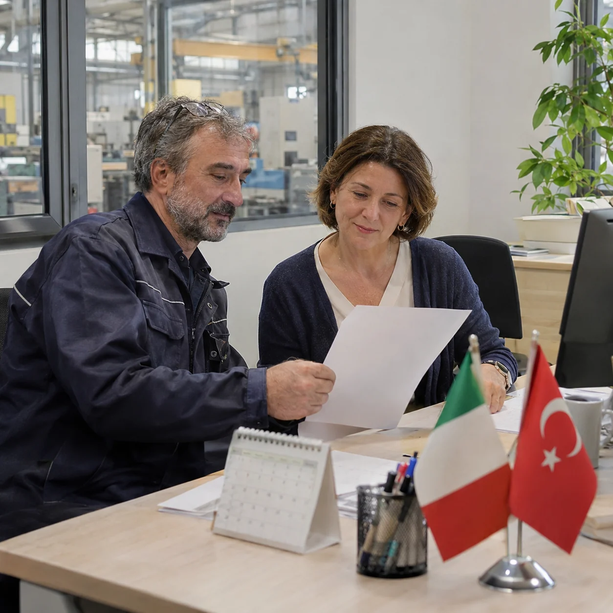

GUIDA PRATICA · LAVORO E CONTRIBUTI · ITALIA–TURCHIA
Italia e Turchia: contributi e previdenza dei lavoratori distaccati
Pubblicata e verificata il · Istruzioni INPS del 18 novembre 2026
La tua azienda ti manda temporaneamente a lavorare in Turchia, oppure arrivi in Italia con un distacco dalla Turchia? È utile sapere quale sistema previdenziale ti copre e chi deve versare i contributi. Il messaggio INPS n. 3768 spiega alle aziende come gestire questi versamenti e le relative comunicazioni.

Il primo passo: chiedi quale copertura si applica al tuo distacco
Chiedi all’ufficio del personale una conferma scritta del periodo di distacco, della legislazione previdenziale applicabile e della certificazione che lo documenta. Conserva la risposta insieme alla lettera di distacco e alle buste paga. I codici delle denunce contributive vengono gestiti dall’azienda o dal suo intermediario.
Che cosa ha chiarito l’INPS nel novembre 2026
L’Istituto nazionale della previdenza sociale (INPS) ha pubblicato il messaggio n. 3768 del 18 novembre 2026, seguito dalla notizia del 19 novembre. Le istruzioni riguardano i lavoratori dipendenti distaccati nei due sensi, dalla Turchia all’Italia e dall’Italia alla Turchia. Leggi il documento ufficiale.
L’Accordo bilaterale sulla previdenza sociale è già in vigore dal 1° agosto 2015. Il chiarimento del 2026 riguarda la gestione dei contributi e il flusso Uniemens: la comunicazione con cui il datore di lavoro trasmette all’INPS i dati retributivi e contributivi dei dipendenti. Per il lavoratore è un’occasione per controllare che il periodo sia gestito correttamente.
A chi serve questa guida
Serve ai dipendenti inviati temporaneamente tra i due Paesi, ai familiari che li aiutano a raccogliere i documenti e agli uffici del personale. Può interessare anche chi si avvicina alla pensione e vuole ricostruire i periodi lavorati all’estero.
Il distacco previdenziale consente, alle condizioni previste dall’Accordo e per il periodo riconosciuto, di mantenere l’assoggettamento alla legislazione del Paese di provenienza. Un’assunzione diretta da parte di un’impresa dell’altro Paese richiede una valutazione diversa. Prima di usare i codici descritti qui occorre quindi verificare che si tratti effettivamente di un distacco disciplinato dall’Accordo.
L’Accordo ha un ambito più ampio e si applica anche a categorie diverse dai dipendenti; il messaggio del 18 novembre tratta specificamente i lavoratori dipendenti distaccati. La circolare n. 168 del 2015 resta il riferimento di base per la legislazione applicabile. Fonte: circolare INPS.
Dalla Turchia all’Italia: che cosa deve fare l’azienda
Per i dipendenti distaccati in Italia in base all’Accordo, nella denuncia individuale Uniemens il datore di lavoro deve utilizzare il codice Tipo Contribuzione 78. La descrizione del codice comprende i lavoratori provenienti dall’Albania o dalla Turchia che restano assicurati nel Paese di origine per le coperture indicate.
Le sigle presenti nella descrizione sono IVS, cioè invalidità, vecchiaia e superstiti, e DS, disoccupazione; sono inoltre richiamate malattia e maternità. Per distinguere la provenienza deve essere compilato l’elemento <TipoLavStat>, all’interno di <DatiRetributivi>.
| Provenienza | Tipo Contribuzione | TipoLavStat |
|---|---|---|
| Turchia | 78 | DI01 |
| Albania, richiamata nella descrizione del codice | 78 | DI02 |
In DI01 e DI02 il secondo carattere è la lettera I maiuscola. Il riferimento all’Albania serve a leggere correttamente la codifica condivisa.
Per le forme assicurative escluse dall’ambito dell’Accordo, l’azienda deve assolvere gli obblighi contributivi in Italia secondo la normativa nazionale. La copertura nel Paese di origine va quindi verificata insieme a quella eventualmente dovuta in Italia.
Dall’Italia alla Turchia: posizione contributiva e codici
Per i dipendenti distaccati dall’Italia in Turchia, i contributi dovuti si versano secondo le modalità già previste per i lavoratori inviati in Paesi legati all’Italia da accordi di sicurezza sociale.
| Codice di autorizzazione | A che cosa serve |
|---|---|
4Z | Contrassegna l’apposita posizione contributiva da aprire per questi lavoratori. |
1C | Identifica l’esonero dal versamento della contribuzione CUAF. |
CUAF significa Cassa unica assegni familiari. Per il distacco dall’Italia in Turchia descritto dal messaggio, questa contribuzione è esclusa dal campo di applicazione dell’Accordo e non è dovuta neppure in base al decreto-legge n. 317 del 1987, convertito nella legge n. 398 del 1987. Per questo la posizione va contrassegnata anche con 1C.
L’esonero riguarda questa specifica voce contributiva. La verifica di eventuali prestazioni familiari spettanti al lavoratore segue i relativi requisiti.
Come si correggono i periodi precedenti
Per i periodi anteriori alla pubblicazione del messaggio, l’INPS consente ai datori di lavoro di presentare una denuncia di regolarizzazione. Se ti accorgi di una possibile anomalia, indica all’ufficio paghe i mesi interessati e chiedi una verifica scritta.
Il messaggio non fissa una scadenza speciale per questa regolarizzazione e non quantifica sanzioni o interessi. Le modalità concrete e gli eventuali importi devono essere valutati dall’azienda con il proprio intermediario e con l’INPS, secondo la situazione effettiva.
Tre controlli utili per il lavoratore
- Raccogli i documenti: lettera di distacco, date di inizio e fine, certificazione previdenziale e cedolini del periodo.
- Chiedi dove risultano i contributi: fai verificare all’ufficio paghe la copertura nel Paese competente e le eventuali assicurazioni dovute nell’altro Paese.
- Conserva l’esito: se viene effettuata una correzione, chiedi il riferimento della pratica e la conferma dei mesi regolarizzati.
Per i periodi assicurati in Italia può aiutarti la guida sull’estratto conto contributivo. Un periodo coperto dalla previdenza turca richiede anche la verifica presso l’istituzione competente di quel Paese: la sola consultazione dell’estratto conto italiano non ricostruisce necessariamente tutta la tua carriera.
Due esempi pratici
Esempio inventato: dalla Turchia in Italia. Un tecnico resta assicurato in Turchia per le coperture previste dall’Accordo e lavora temporaneamente in Italia. Il soggetto che presenta la denuncia individuale Uniemens deve verificare l’uso di 78 e DI01, oltre agli obblighi italiani per le assicurazioni escluse dall’Accordo.
Esempio inventato: dall’Italia in Turchia. Una dipendente viene inviata temporaneamente da un’azienda italiana in Turchia, con distacco riconosciuto in base all’Accordo. L’azienda verifica l’apposita posizione con i codici 4Z e 1C e versa i contributi dovuti con le modalità per i Paesi convenzionati. La dipendente conserva lettera, certificazione e cedolini.
Le domande più comuni
Devo inserire personalmente i codici sul sito INPS?
Gli adempimenti Uniemens e la posizione contributiva sono gestiti dal datore di lavoro o dall’intermediario incaricato. Al lavoratore conviene chiedere conferma della copertura e controllare i propri documenti.
Queste istruzioni modificano l’importo della mia pensione?
Il messaggio disciplina versamenti e comunicazioni dei dipendenti distaccati. Per valutare una pensione con periodi italiani e turchi occorre esaminare separatamente la carriera assicurativa e i requisiti della prestazione. Puoi rivolgerti all’INPS o a un patronato.
Per quanto tempo può durare il mio distacco?
La durata e le eventuali proroghe vanno confermate nella certificazione e con gli enti competenti. Il messaggio n. 3768 non stabilisce nuove durate: le sue istruzioni riguardano la gestione contributiva. Prima di partire o prolungare la permanenza, chiedi all’azienda una verifica del periodo autorizzato.
Fonti ufficiali e data della verifica
Verifica documentale del 23 novembre 2026. I codici e la regolarizzazione derivano dal messaggio n. 3768; l’inquadramento dell’Accordo dalla circolare n. 168. Le richieste di documenti e i tre controlli sono suggerimenti pratici di Per Me.
Hai una domanda sulla guida?
Scrivila sulla Pagina Per Me Guide indicando “Distacco Italia–Turchia”. Per le pratiche personali usa i canali riservati dell’ente competente.